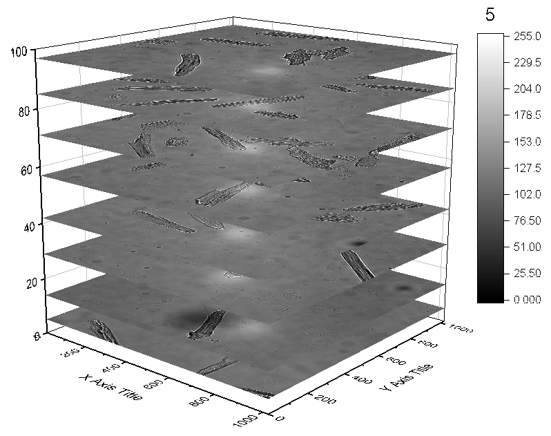

Flache Oberflächendiagramme mit bestimmten Z-Versatz stapeln
FlatSurface-Z-Offset
Zusammenfassung
Dieses Tutorial zeigt Ihnen, wie Sie mehrere Bildobjekte als ein gestapeltes, flaches Oberflächendiagramm mit Z-Versatz zeichnen.

Was Sie lernen werden
- Wie Sie mehrere Bilder in Origin als Matrixobjekte importieren.
- Wie Sie Bildobjekte als ein gestapeltes 3D-Oberflächendiagramm in einem Diagrammlayer zeichnen.
- Wie Sie die abgeflachten Bilder auf der Z-Achse positionieren.
Schritte
- Öffnen Sie eine neue Matrix und wählen Sie Daten: Aus Datei importieren: Bild in Matrix, um die Dateien myocyte1 bis myocyte8 im Ordner \Sample\Image Processing and Analysis zu importieren. Belassen Sie im Dialog ImpImage die Einstellung Mehrere Dateien (Ausnahme 1.) Importmodus auf Neue Objekte öffnen.

- Klicken Sie auf OK, um die Dateien in die Matrix als Matrixobjekte zu importieren.
- Klicken Sie mit der rechten Maustaste auf das erste Objekt und wählen Sie Einstellungen im Kontextmenü, um den Dialog Matrixeigenschaften zu öffnen. Geben Sie 5, 14, 29, 42, 57, 71, 85 und 97 separat in das Feld Kommentar für jedes Objekt ein, indem Sie auf die Schaltfläche Weiter >>, um sich durch die Objekte zu bewegen. Klicken Sie auf die Schaltfläche Anwenden und dann auf OK, um den Dialog zu schließen.
- Wählen Sie Zeichnen: 3D: Gestapelte 3D-Oberflächen im Hauptmenü, um ein gestapeltes, flaches Oberflächendiagramm zu zeichnen.

- Klicken Sie doppelt auf die Zeichnung, um den Dialog Details Zeichnung zu öffnen, gehen Sie zur Registerkarte Farbpalette/Kontur und klicken Sie auf den Header Füllung, um den Dialog Füllung zu öffnen und die Palette GrayScale auszuwählen.
- Klicken Sie auf OK, um den Dialog zu schließen. Zeigen Sie den Entwurfsmodus an, indem Sie auf die Schaltfläche
 klicken. Sie erhalten das folgende Diagramm.
klicken. Sie erhalten das folgende Diagramm.